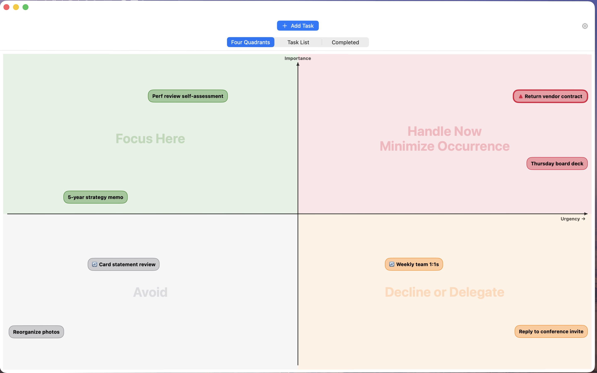
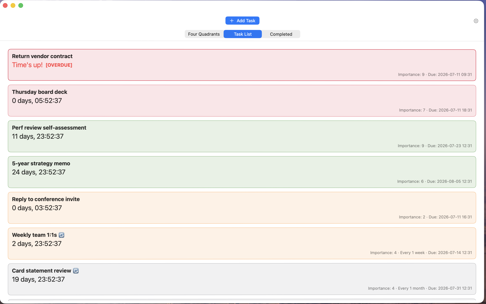
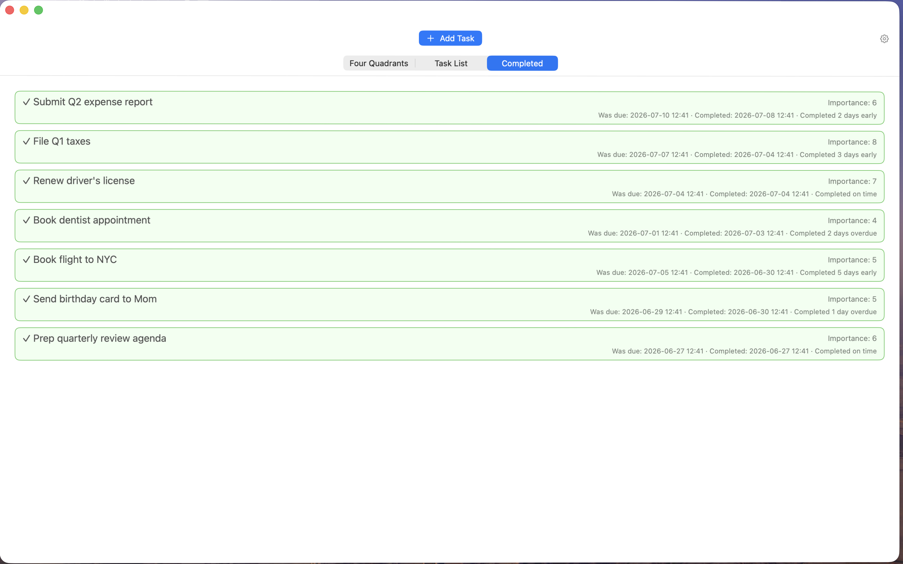
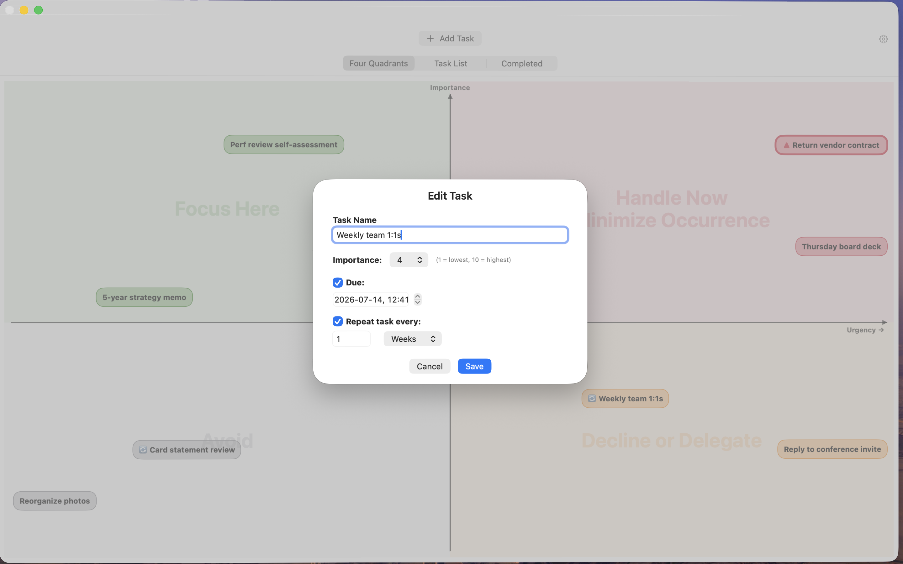
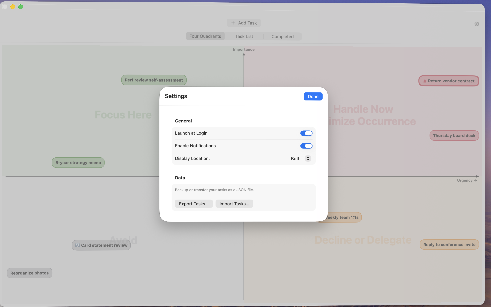

See Priorities Clearly
Four quadrants · Live countdowns · Automatic urgency
Four quadrants · Live countdowns · Automatic urgency

Full list · Overdue flags · Recurring tasks

Punctuality labels · Early · On time · Overdue

Set due dates · Assign importance · Configure recurrence

Launch at login · Menu bar or Dock · Export & import
